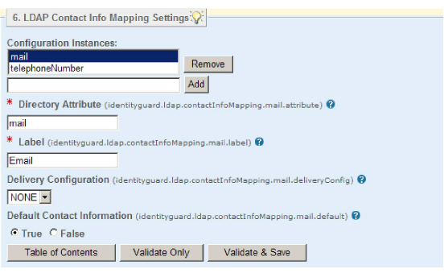

|
IdentityGuard Server 12.0 Administration Guide |
|
IdentityGuard Server 12.0 Administration Guide |
You can configure Entrust IdentityGuard to automatically map user contact information and the user’s full name directly from your LDAP directory.
The contact information you can map includes, but is not limited to:
● the user’s full name
● one or more email addresses
● one or more telephone numbers
You can set up automatic mapping of user contact info, or any information you choose to map into the contact info by following the steps in this procedure.
When contact information mapping is enabled,  some differences appear in a user account.
some differences appear in a user account.
To map contact info from an LDAP directory
1. Start the Entrust IdentityGuard Properties Editor.
2. On the Table of Contents, click LDAP Contact Info Mapping Settings.
3. In Configuration Instances, enter a name that to identify a contact info type; mail, for example.
4. Click Add.

5. In Directory Attribute, enter the directory attribute used for this type of information in the LDAP directory. Enter this attribute exactly as it appears in the directory schema; you cannot use the friendly name displayed in the directory vendor’s GUI.
6. In Label, enter the text you want users to see. Make the labels as specific as you can to help users distinguish between contact information entries.
For multivalued attributes, you can specify the label with {0} to specify a numeric counter. If you specify Label as Email {0}, for example, a multivalued attribute generates contact information entries labeled Email 1, Email 2, and so on. If you map a multivalued attribute without specifying the {0}, only the first value of the attribute is mapped.
7. In Delivery Configuration, select from the drop-down list. The list contains any out-of-band delivery mechanisms you have defined. If you have not defined any, the only choice available is NONE.
Note: You define out-of-band delivery mechanisms in the Properties Editor. See:
- Out-of-Band OTP Email Delivery Configuration
- Out-of-Band OTP Voice Delivery Configuration
- Out-of-Band OTP SMS Delivery Configuration
8. Set Default Contact Information to True if the current configuration instance is to be used as the default contact info for out-of-band delivery when no specific contact info is given.
When using a multivalued attribute, the first value is mapped to the user’s default contact information.
9. Click Validate & Save.
10. In the Table of Contents, click LDAP Directory Server Settings.
11. Scroll down to Apply Contact Info Mappings.
12. Enter the names of the LDAP Contact Info Mapping Settings you just defined. Use the exact spellings of the Configuration Instances, separated by commas.
The order of the mapping settings is important; mappings are applied in the order they are listed here. That means that, depending on how you have defined the contact info mappings, contact info mappings early in the list may prevent the mappings specified in items that follow.
13. Click Validate & Save.